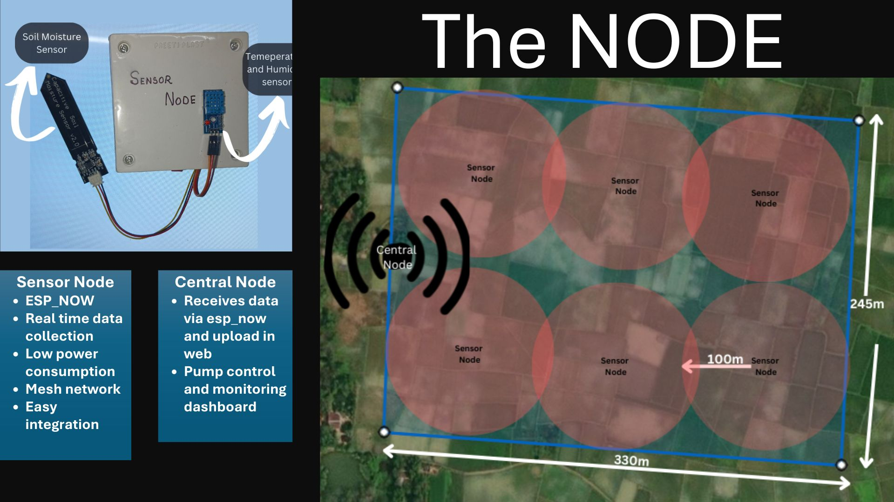
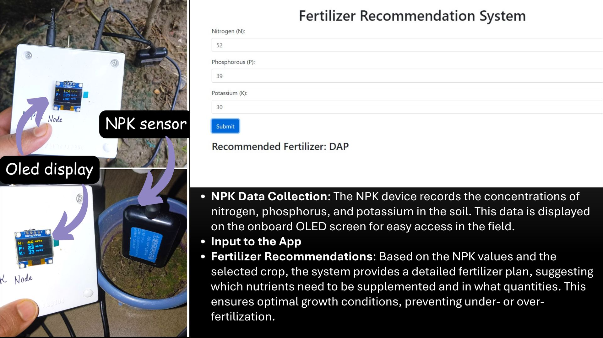
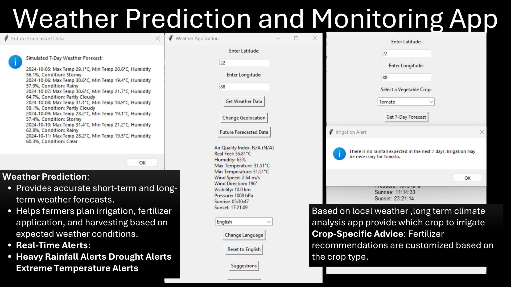
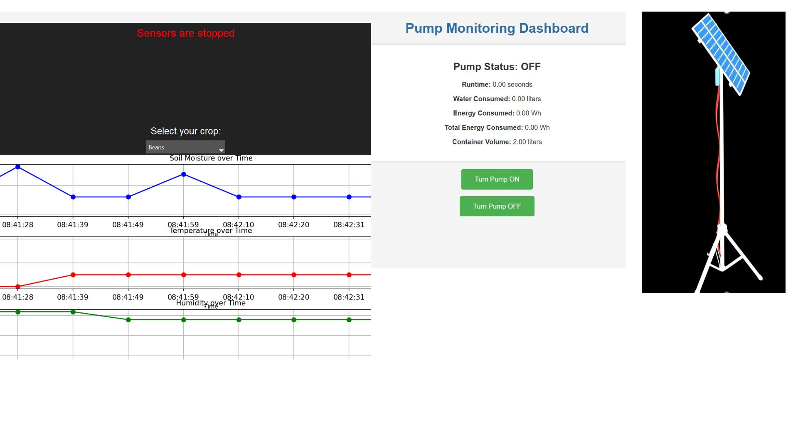

Overview
This Smart Irrigation System is a fully wireless, real-time decision-making platform for agricultural water and nutrient management. Designed to enhance yield and efficiency, it operates through coordinated sensor and control nodes using ESP-NOW and a central decision logic unit.
System Architecture
- Sensor Nodes: Collect moisture, temperature, light data; transmit wirelessly using ESP-NOW.
- NPK Node: Measures Nitrogen, Phosphorus, and Potassium; displays data on an OLED; sends nutrient data to base station.
- Central Node: Receives data, triggers irrigation pump via relay, updates user dashboard.
Core Functionalities
- Fertilizer Recommendation: Based on real-time NPK + crop logic.
- Weather-Integrated Alerts: Rainfall/drought warnings via forecast APIs.
- Multilingual Dashboard: Web app interface in local languages with voice prompts.
- Offline Support: ESP-NOW mesh keeps working without internet.
- Security Extension: Optional PIR or camera integration for field monitoring.
How It Works
The Smart Irrigation System consists of a network of ESP-NOW-enabled sensor nodes, a central control node, and a web-based dashboard. Here's a step-by-step breakdown of how it functions:
- 1. Data Collection by Sensor Node: Each field-deployed sensor node collects data such as soil moisture, temperature, and light intensity. These are captured using calibrated analog/digital sensors interfaced with ESP32 modules. 
- 2. NPK Measurement Node: A separate NPK node utilizes a soil nutrient sensor to measure nitrogen, phosphorus, and potassium levels. An onboard OLED screen displays these in real time while the ESP32 sends data to the central node wirelessly. 
- 3. Communication via ESP-NOW: All nodes communicate peer-to-peer using ESP-NOW, which is faster and more energy-efficient than traditional WiFi. This allows the network to function even without internet.
- 4. Central Node Processing: The central node receives sensor data from all nodes, processes it to assess soil dryness and nutrient deficiency. If moisture is below threshold, the central node triggers a relay module that turns on the water pump.
- 5. Weather Integration: The central node also uses RESTful APIs to pull local weather forecasts. If rain is predicted soon, irrigation is postponed to save water. Alerts are generated for extreme heat or potential drought. 
- 6. Fertilizer Recommendation: Based on NPK readings and crop type, the system calculates how much and what type of fertilizer is needed. Recommendations are displayed on the dashboard and optionally sent via voice alerts.
- 7. Web Dashboard Output: All processed data and decisions are published to a multilingual web app. Farmers can see current soil stats, nutrient advice, forecast warnings, and manual pump override options in local language. 
- 8. Voice + Offline Support: In low-literacy or remote settings, voice alerts (via speaker or app) guide farmers. Offline-first behavior ensures operation even when disconnected from the internet.
Tech Stack
My Role
I personally designed the entire system architecture, programmed all nodes, integrated ESP-NOW for reliable communication, developed the nutrient analysis logic, and implemented the voice-enabled dashboard. I also handled all hardware integration, testing, and optimization for field reliability.
⬅ Back to Portfolio